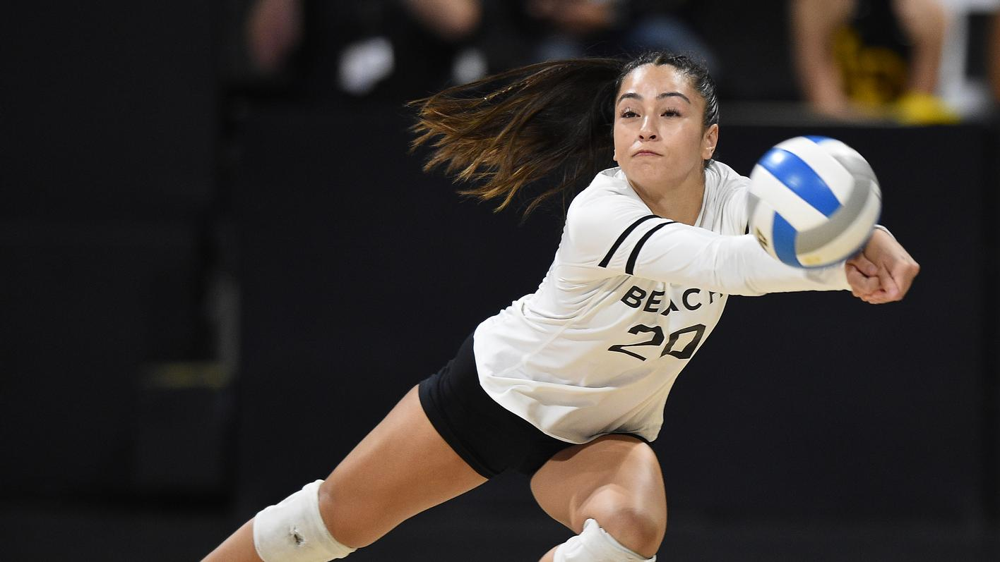

Volleyball is a team sport that involves two teams of six players each, with the objective of scoring points by hitting a ball over a net and onto the opponent's court without the ball being returned. It is a fast-paced and physically demanding sport that requires a combination of skills such as agility, speed, power, coordination, and strategy.
One of the specialties of volleyball is that it is a non-contact sport, meaning that players are not allowed to touch the net or each other during play. This makes it a safer sport compared to other contact sports such as football or basketball.
Another specialty of volleyball is that it requires players to communicate and work closely as a team to execute plays and win points. Players must be able to read and anticipate their opponent's moves, make quick decisions, and adjust their positioning on the court accordingly.
Volleyball also requires specialized skills such as serving, passing, setting, hitting, blocking, and digging. Each position on the court has specific responsibilities and requires different skills, making volleyball a sport that demands versatility and adaptability from its players.
Overall, the specialty of volleyball lies in its unique combination of physical, mental, and strategic demands that require teamwork, communication, and specialized skills to succeed.